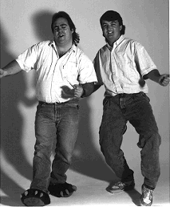

Luke speaks
With the release of System 7 comes a new release of the LaserWriter driver, version
7.0. Yes, the great implementors (GIs) have once again created another version of this
driver. This version supports TrueType fonts, it's 32-bit clean, it has the new
PostScript file-saving capability, and it remembers the last setting of the Black &
White and Color/Grayscale print buttons (HOORAY!!).
Along comes our hero, Dudley Developer. He's been using the new CopyMask and
CopyDeepMask calls that are available in QuickDraw in System 7 and he's very excited
about printing his new images with the LaserWriter driver. He assumes that since
QuickDraw supports the new CopyMask and CopyDeepMask calls, the LaserWriter
driver 7.0 will also support them.
Bad assumption. Our hero has not been keeping up with current events. He has not even
read "QuickDraw's CopyBits Procedure: Better Than Ever in System 7.0" in Issue 6
ofdevelop . If he had, he would know that, like previous versions of the LaserWriter
driver, LaserWriter driver 7.0 does not directly support the CopyMask and
CopyDeepMask calls.
So, in his ignorance, our hero creates a few pictures with the new QuickDraw calls,
and sends them off to the LaserWriter. Time goes by, paper comes out, but the picture
doesn't look the same as it did on his monitor. It has lost some of the cool effects from
CopyMask and CopyDeepMask.
Why, he wonders, won't LaserWriter driver 7.0 print his images with the same
effects provided by the CopyMask and CopyDeepMask calls? What was Apple thinking
when they created LaserWriter driver 7.0? How could they release a driver that
doesn't support the new 32-bit QuickDraw calls? How do they expect him to print his
new cool pictures created in System 7 with these calls?
To attempt to understand the problem, Dudley looks between the covers of the Adobe
red book (a.k.a. PostScript Language Reference Manual by Adobe Systems). Even he
knows transfer modes would be required to support the new calls--but alas, he doesn't
find any information on them, because PostScript level 1 doesn't understand transfer
modes. Unfortunately, the LaserWriter driver won't rewrite PostScript for you; it
just merrily converts your QuickDraw calls into their equivalent PostScript call. The
LaserWriter driver always uses the srcCopy transfer mode when it prints a pixel
map, regardless of the mode used when the picture was created. (Why srcCopy?
Because of the limitations of the color model and the lack of transfer mode support
provided by PostScript level 1.)
Thereis a method that will allow Dudley to print the images he created, but as usual
with printing, he'll need to do a little more work: he'll need to use GWorlds and
PrGeneral. Since our hero is not familiar with using GWorlds, he decides to go back
through his old issues ofdevelop , hoping for an article. Luckily, he finds just what
he's looking for in Issue 1: "Realistic Color for Real-World Applications" and "Braving
Offscreen Worlds." And the CD contains the sample code that uses GWorlds. So, after
reading the articles and trying the code, Dudley is all set to create an off-screen world
to hold his image. He realizes that to get the best print quality, he'll need to make the
GWorld bigger than the picture on the screen. The GWorld should be the size of the
grafPort returned by the application's call to PrOpenDoc, at the printer's resolution.
Dudley knows he needs a device- independent method to acquire this information, and
he knows he can get it by using PrGeneral's GetRslData opcode. And even better still, he
remembers an article about using PrGeneral from Issue 3 of develop . The article was
titled "Meet PrGeneral," and it contained complete sample code. Yippee! After using
the GetRslData opcode to determine the resolutions supported by the currently selected
printer, he uses the SetRsl opcode to set the printer to the resolution he wants. When
his application calls PrOpenDoc, the printer driver will return a grafPort that's sized
correctly for the resolution he chose.
Next, Dudley creates the correctly sized off-screen world and draws his image using
CopyMask or CopyDeepMask. He just needs to remember that since the CopyMask and
CopyDeepMask calls are not saved in pictures, he needs to make the calls directly into
his off-screen world (not relying on DrawPicture). So, when he's ready to print his
image, Dudley uses CopyBits to copy it from his GWorld into the printer's grafPort
with srcCopy. That's it; his totally cool image has been printed in living color (or
anemic gray scales, if he's printing to the LaserWriter).
This wasn't so bad, but our hero is wondering--when will the GIs make this easier?
When will all of this incompatibility between QuickDraw and the LaserWriter driver
improve? That's a really good question. The GIs tell me things will probably not
improve until the new printing architecture is released. In the meantime, you've got
this way around the problem, and at least it isn't too ugly!
REFERENCES
PETE "LUKE" ALEXANDER After taking almost a year to check out Ford Explorers
in parking lots and dealerships, Luke has, in a surprise move, actually purchased one
of his own. At SIGGRAPH in Las Vegas he ran into some Ford engineers; they were
surprised, but not seriously hurt. They asked increduously, "Have you driven a Ford
lately?" Luke left wondering what kind of inside information they had. He knew for
sure, though, that the animation was his favorite part of the show-- which figures,
since since he's so used to working with Zz, our resident cartoon character. Not
surprisingly, the Las Vegas show he talked about the most had little to do with
computers! He also enjoys the show at Gordon Biersch, a local brew pub known for its
good beer and yuppie clientele. Luke says he goes there to see how yuppie scum lives,
but every once in a while we think he already knows.*